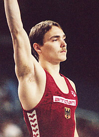

Oliver Walther (GDR/GER)
1994 American Cup AA Bronze Medalist

Oliver was born on October 28, 1972, in Halle.
Competition Results
1983
GDR Children's Spartakiade: 1st Team, 1st PB, 1st HB
1990
Chunichi Cup: 12th AA, 8th HB
GDR-SUI Dual Meet: 1st Team, 5th AA
GER-ITA-ROM Meet: 15th AA
Jr. Walzwerker Cup: 1st AA
Tokyo Cup: 1st HB, 2nd PB, 6th R
1991
Chunichi Cup: 16th AA
DTB Cup: 8th AA
GER Championships: 5th AA
GER-ESP Dual Meet: 1st Team, 5th AA
GER-SUI Dual Meet: 1st Team, 6th AA
Tokyo Cup: 5th FX
1992
Cottbus International: 13th AA
DTB Cup: 8th AA
GER-HUN Dual Meet: 1st Team, 6th AA
GER-SUI-ROM Meet: 5th AA
Hungarian International: 4th AA, 1st PB
Olympic Games: 4th Team, 13th AA
1993
Cottbus International: 8th AA
European Cup: 10th AA, 4th PH, 7th FX
Gander Memorial: 5th AA
Kosice International: 7th AA
Rome Grand Prix: 4th AA
Swiss Cup: 6th Team
1994
American Cup: 3rd AA
World Championships: 22nd AA
1995
Atlanta Gymnastics Invitational (Pre-Olympics): 10th AA
Cottbus International: 4th HB, 5th R, 6th PH
Subway World Challenge: 7th AA
1996
GER Championships: 5th AA, 3rd PH, 3rd PB
Olympic Games: 7th Team, 32nd AA (prelims)
1997
Cottbus International: 7th R, 7th PB (prelims)
GER Championships: 11th AA
2000
GER Championships: 7th AA
This page was created on November
19, 2005.
© Gymn Forum